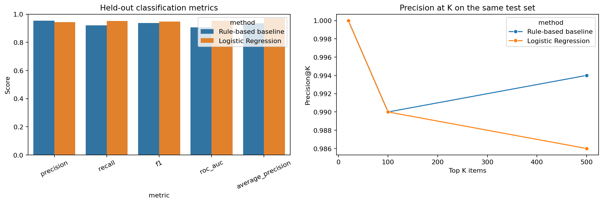
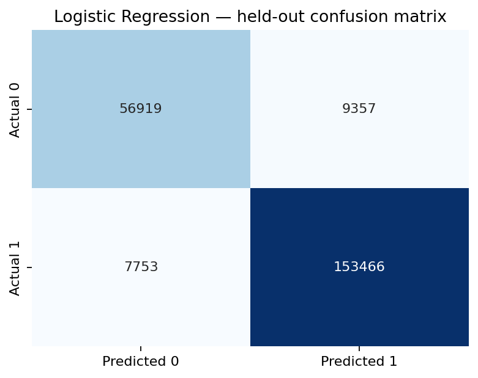
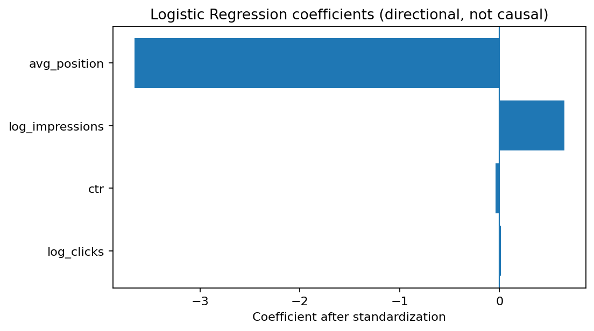

Prioritizing Search Content for Human Review: A Time-Aware Opportunity Scoring Study
An observational machine-learning study comparing a transparent rule-based baseline with Logistic Regression for prioritizing search-content opportunities for human review.
Abstract
This study asks whether current search-performance signals can prioritize content items for human review when a low-CTR / strong-position condition is observed in the following seven days. It uses the pseudonymized FlyRank warehouse release and compares a rule-based baseline with Logistic Regression using a chronological split with a seven-day embargo.
The test set contains 227,495 eligible observations, and its observed positive-label rate is 0.7087. On this chronological holdout, Logistic Regression had the higher F1 score than the rule-based baseline. This is a measured result for this split only.
The resulting scores are intended for review prioritization only and do not estimate the causal impact of refreshing content.
1. Introduction / Problem Statement
Content teams need a repeatable way to decide which items to inspect first. This study evaluates a simple, auditable decision-support workflow.
It does not attempt to prove a Google ranking factor or claim that any refresh will cause better performance.
2. Data
The analysis uses
FlyRank/internship-warehouse,
release v20260703, specifically
fact_content_daily_performance.
The decision observations cover 2026-03-01 through 2026-03-31. The forward-label source window extends through 2026-04-07.
Rows must have GSC availability, at least 100 impressions at decision time, and at least four observed days in the next seven-day window.
Privacy and Data Protection
Client names, domains, URLs, private queries, credentials, raw exports, and identifiers are not included in this public paper.
3. Methodology
Features
Features are log-transformed current impressions and clicks, current CTR, and current average position.
Future Outcome Definition
The target is 1 when at least one sufficiently observed day in the next seven calendar days has:
- At least 100 impressions
- Average position ≤ 10
- CTR < 2%
The target is 0 when at least four future observed days exist and none meets the condition. Incomplete follow-up is excluded.
Rule-Based Baseline
The baseline flags a current item with at least 100 impressions, average position ≤ 10, and CTR < 2%.
Logistic Regression
Logistic Regression uses median imputation, standardization, and balanced class weights.
Time-Aware Evaluation
Training covers March 1–14. March 15–21 is used as a seven-day embargo. Testing covers March 22–31.
Leakage Control
Future-window, label-derived, and identifier fields are excluded from model features. The chronological split and embargo are designed to prevent future information from entering the training features.
Ranking Tie-Breaking
The rule-based baseline produces binary scores, resulting in tied rankings. Ties were broken using current impressions so that items could be placed in a deterministic order.
Consequently, the reported ranking metrics depend partly on this tie-break rule and should be interpreted with that limitation in mind.
4. Results
On this chronological holdout, Logistic Regression had the higher F1 score than the rule-based baseline. This is a measured result for this split only.
Classification Metrics
Both methods are evaluated on the same held-out observations.
| Method | Accuracy | Precision | Recall | F1 | ROC-AUC | Average Precision |
|---|---|---|---|---|---|---|
| Rule-based baseline | 0.9128 | 0.9543 | 0.9210 | 0.9374 | 0.9069 | 0.9349 |
| Logistic Regression | 0.9248 | 0.9425 | 0.9519 | 0.9472 | 0.9535 | 0.9727 |
Ranking Metrics
| Method | K | Precision@K | Recall@K | Positive Cases Found |
|---|---|---|---|---|
| Rule-based baseline | 20 | 1.0000 | 0.0001 | 20 |
| Rule-based baseline | 100 | 0.9900 | 0.0006 | 99 |
| Rule-based baseline | 500 | 0.9940 | 0.0031 | 497 |
| Logistic Regression | 20 | 1.0000 | 0.0001 | 20 |
| Logistic Regression | 100 | 0.9900 | 0.0006 | 99 |
| Logistic Regression | 500 | 0.9860 | 0.0031 | 493 |
Interpretation
Logistic Regression achieved an F1 score of 0.9472, compared with 0.9374 for the rule-based baseline, on the same chronological test set.
Its recall was higher (0.9519 versus 0.9210), while its precision was slightly lower (0.9425 versus 0.9543). This represents a trade-off between identifying more positive cases and generating more false-positive predictions.
Although the model achieved a better F1 score in this evaluation, the ranking metrics were similar. Therefore, the results do not establish a substantial improvement in practical prioritization over the rule-based approach.
Figures



5. Limitations & Honest Framing
- This is a single March decision-window evaluation, not a seasonal study.
- The target is a defined future performance condition, not a verified need for refresh or evidence of refresh success.
- The analysis is observational and cannot establish causality.
- Observation coverage varies.
- CTR depends on factors not fully represented in the data.
- A chronological split does not prove generalization to unseen clients.
- Logistic Regression scores are used for ranking and are not presented as calibrated probabilities.
Important Interpretation
A higher model score should not be interpreted as a guarantee that editing or refreshing a page will improve its search performance.
6. Ranked Recommendations
Use the ranked queue as a human-review aid rather than an automatic content-editing system.
In this evaluation, all 100 items in the top-ranked action summary were assigned the same review action: checking title/snippet accuracy and query intent.
This indicates that the recommendations were concentrated in one action category; the results do not demonstrate a diverse set of opportunities beyond the transparent rule-based approach.
Recommended Human Review Process
- Review query intent.
- Examine competing search results.
- Assess content usefulness and completeness.
- Check freshness where relevant.
- Review internal linking opportunities.
- Treat the model score as a prioritization signal rather than a guarantee.
- Monitor subsequent search performance after changes.
Aggregate Action Summary from the Top-Ranked 100 Test Observations
| Suggested Review Action | Reason Code | Items | Median Impressions | Median CTR (%) | Median Average Position |
|---|---|---|---|---|---|
| Review title/snippet and query intent |
CURRENT_LOW_CTR_STRONG_POSITION
|
100 | 9669.5000 | 0.0514 | 2.3157 |
7. Reproducibility
The notebook reads the gated dataset through DuckDB and Hugging Face using a read-only token stored in Colab Secrets.
It writes the model metrics, ranking metrics, action summary, ```